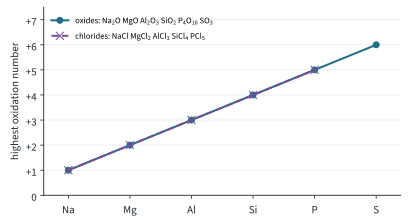
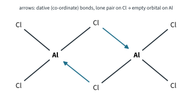
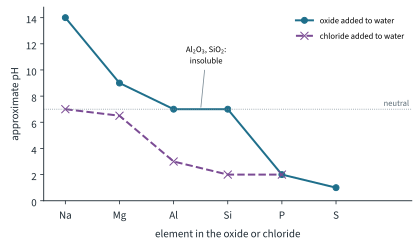
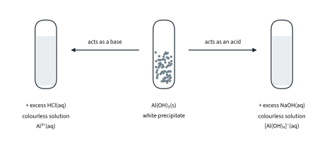

The Periodic Table 2
Topic 5 · The Periodic Table Part 2
On this page
Across Period 3 the elements change from reactive metals to non-metals, and their oxides and chlorides change with them: from ionic to covalent, from basic to acidic. It looks like a lot of separate facts to learn. It isn't. One idea, electronegativity, runs through all of it, and once you see that, most of this Part can be worked out rather than memorised.
Oxidation numbers: just enough for now
Oxidation numbers are covered fully in Topic 12. For this topic you only need the idea: the oxidation number of an atom is the charge it would have if all its bonds were ionic, with the bonding electrons given to the more electronegative atom. Four rules are enough here:
- An uncombined element has oxidation number 0.
- Oxygen in its compounds is −2 (except in peroxides and with fluorine).
- Chlorine in a chloride is −1.
- The oxidation numbers in a neutral compound add up to zero.
Worked example 1
Find the oxidation number of phosphorus in P4O10.
4x + 10(−2) = 0
x = +20 / 4 = +5
The highest oxidation numbers
| Element | Na | Mg | Al | Si | P | S |
|---|---|---|---|---|---|---|
| Outer electrons | 1 | 2 | 3 | 4 | 5 | 6 |
| Oxide | Na2O | MgO | Al2O3 | SiO2 | P4O10 | SO3 |
| Oxidation number | +1 | +2 | +3 | +4 | +5 | +6 |
| Chloride | NaCl | MgCl2 | AlCl3 | SiCl4 | PCl5 | |
| Oxidation number | +1 | +2 | +3 | +4 | +5 |
In the oxides, the highest oxidation number rises from +1 to +6, and it equals the number of outer electrons. Oxygen is more electronegative than every element in Period 3, so in the highest oxide all the outer electrons of the element are, in oxidation-number terms, ‘given’ to oxygen.
The chlorides follow the same pattern from +1 to +5. The pattern stops there for chlorine, which is less electronegative than oxygen and a much larger atom: there is no sulfur chloride with sulfur at +6.1 (Further example. Chlorine’s own highest oxide, Cl2O7, has chlorine at +7, its number of outer electrons, so it continues the oxide pattern.) Fig 1 shows both patterns.

Bonding: ionic to covalent
The rule from Topic 2 Part 1: a large difference in electronegativity (ΔEN) gives ionic bonding; a small difference gives covalent bonding. Oxygen (3.44) and chlorine (3.16) are both very electronegative. Across the period the element becomes more electronegative, so ΔEN falls and the bonding changes from ionic to covalent (Pauling values, literature):
| Oxide | ΔEN | Bonding | Structure | m.p. / °C |
|---|---|---|---|---|
| Na2O | 2.51 | ionic | giant ionic | 1132 |
| MgO | 2.13 | ionic | giant ionic | 2852 |
| Al2O3 | 1.83 | ionic, with some covalent character | giant ionic | 2072 |
| SiO2 | 1.54 | covalent | giant molecular | 1710 |
| P4O10 | 1.25 | covalent | simple molecular | sublimes at 360 |
| SO3 | 0.86 | covalent | simple molecular | 17 |
| Chloride | ΔEN | Bonding | Structure | m.p. / °C |
|---|---|---|---|---|
| NaCl | 2.23 | ionic | giant ionic | 801 |
| MgCl2 | 1.85 | ionic | giant ionic | 714 |
| AlCl3 | 1.55 | covalent (the exception, below) | simple molecular (Al2Cl6) | sublimes at 178 |
| SiCl4 | 1.26 | covalent | simple molecular | −69 |
| PCl5 | 0.97 | covalent | simple molecular2 | sublimes at 160 |
(Melting points are literature values.) Treat ΔEN as a guide to the trend, not a cut-off: Al–O (1.83) is ionic while Al–Cl (1.55) is covalent, and Si–O (1.54) is covalent. What matters is the direction of change across the period.
- The ionic oxides and chlorides (Na, Mg, and Al2O3) are giant ionic lattices with high melting points. MgO melts far higher than Na2O because Mg2+ and O2− are doubly charged and Mg2+ is small, so the ionic bonding is much stronger.
- Al2O3 is ionic, but the small, highly charged Al3+ ion distorts (polarises) the electron cloud of the O2− ion, giving the bonds some covalent character. This in-between bonding is the key to its amphoteric behaviour later.
- SiO2 is giant molecular, like silicon itself: each Si is bonded to four O and each O to two Si, so melting it breaks many strong covalent bonds.
- P4O10, SO3, SiCl4 and PCl5 are simple molecular: only weak forces between the molecules, so they melt, boil or sublime at low temperatures.
The exception: aluminium chloride
Aluminium is a metal, and the chlorides of the metals before it, NaCl and MgCl2, are ionic, so you might expect AlCl3 to be ionic too. Its ΔEN (1.55) is borderline and does not settle it. In fact AlCl3 sublimes at only 178 °C. The reason is polarisation. Al3+ is very small (0.050 nm) and triply charged, so it has a very high charge density (charge ÷ radius = 3 / 0.050 = 60.0 nm−1, against 30.8 nm−1 for Mg2+). It pulls the electron cloud of the large, easily polarised Cl− ion (0.181 nm) so far towards itself that the electrons are shared: the bonding is covalent.3
In an AlCl3 molecule the aluminium atom has only six electrons in its outer shell. It is electron-deficient, so two molecules join up: a lone pair on a chlorine atom of each molecule forms a dative (co-ordinate) bond to the aluminium of the other, giving Al2Cl6 (Fig 2). This dimer is what is found in the vapour at the sublimation temperature; at much higher temperatures it splits back into AlCl3 molecules.4

The oxides with water
| Oxide | With water | pH of the mixture |
|---|---|---|
| Na2O | reacts vigorously, giving a colourless solution of sodium hydroxide | about 14 |
| MgO | reacts slightly, giving magnesium hydroxide, which is only slightly soluble | about 9 |
| Al2O3 | insoluble; no reaction | 7 |
| SiO2 | insoluble; no reaction | 7 |
| P4O10 | reacts vigorously (very exothermic), giving phosphoric(V) acid | about 2 |
| SO3 | reacts violently, giving sulfuric acid | about 1 |
The equations (learn the four reactions):
Na2O(s) + H2O(l) → 2NaOH(aq)
MgO(s) + H2O(l) → Mg(OH)2(s)
P4O10(s) + 6H2O(l) → 4H3PO4(aq)
SO3(l) + H2O(l) → H2SO4(aq)
Al2O3 and SiO2 do not dissolve or react, so the water stays neutral. That does not mean they have no acid-base character; it only means water is not the right reagent to show it. That is the next section.5 Fig 3 summarises the pH values for the oxides and the chlorides.

Acid-base behaviour of the oxides and hydroxides
Basic oxides: Na2O and MgO
The ionic oxides react with acids to give a salt and water. They do not react with alkalis:
Na2O(s) + 2HCl(aq) → 2NaCl(aq) + H2O(l)
MgO(s) + 2HCl(aq) → MgCl2(aq) + H2O(l)
Why basic? These oxides contain the oxide ion, O2−, a very strong base (a strong proton acceptor, Topic 4). It takes protons from water or from an acid:
O2− + H2O → 2OH−
O2− + 2H+ → H2O
Amphoteric oxide: Al2O3
Aluminium oxide is amphoteric: it reacts with acids and with bases. It is insoluble in water, but it dissolves in hydrochloric acid and in sodium hydroxide solution:
Al2O3(s) + 6HCl(aq) → 2AlCl3(aq) + 3H2O(l)
Al2O3(s) + 2NaOH(aq) + 3H2O(l) → 2NaAl(OH)4(aq)
The product with sodium hydroxide is sodium aluminate, containing the tetrahydroxoaluminate ion, [Al(OH)4]−. Why amphoteric? Al2O3 sits in between: ionic enough to contain oxide ions that accept protons, covalent enough (Al3+ polarising O2−) to react with a base.
Acidic oxides: SiO2, P4O10 and SO3
The covalent oxides of the non-metals react with bases, not acids:
SiO2(s) + 2NaOH(aq) → Na2SiO3(aq) + H2O(l) (hot, concentrated NaOH)
P4O10(s) + 12NaOH(aq) → 4Na3PO4(aq) + 6H2O(l)
SO3(l) + 2NaOH(aq) → Na2SO4(aq) + H2O(l)
SiO2 is a giant covalent network, so it reacts only slowly, and only with hot, concentrated alkali; it does not react with acids such as HCl.6 It is still classed as an acidic oxide, because it reacts with a base to form a salt (sodium silicate).
Why acidic? In these oxides the central atom is a non-metal in a high oxidation number, bonded to very electronegative oxygen atoms, so it carries a large δ+. It attracts the lone pair of a water molecule or a hydroxide ion; the products are oxoacids, such as H3PO4 and H2SO4, which release H+ ions.
The hydroxides: NaOH, Mg(OH)2 and Al(OH)3
The hydroxides follow the same pattern as the oxides:
- NaOH is a strong base: it dissolves and dissociates completely, giving a high concentration of OH−(aq). NaOH(aq) + HCl(aq) → NaCl(aq) + H2O(l).
- Mg(OH)2 is basic but only slightly soluble, so it gives only a low concentration of OH−(aq) (a suspension is ‘milk of magnesia’, pH about 9). It reacts with acids but not with alkalis: Mg(OH)2(s) + 2HCl(aq) → MgCl2(aq) + 2H2O(l).
- Al(OH)3 is amphoteric. It is a white, gelatinous precipitate that dissolves in excess acid and in excess sodium hydroxide (Fig 4):
Al(OH)3(s) + 3HCl(aq) → AlCl3(aq) + 3H2O(l)
Al(OH)3(s) + NaOH(aq) → NaAl(OH)4(aq)
ionic: Al(OH)3(s) + OH−(aq) → [Al(OH)4]−(aq)

So if you add NaOH(aq) drop by drop to a solution of an aluminium salt, a white precipitate of Al(OH)3 forms first, then dissolves again in excess NaOH to give a colourless solution. Mg2+(aq) gives a white precipitate of Mg(OH)2 that does not dissolve in excess: a quick way to tell the two apart.
The chlorides with water
| Chloride | With water | pH |
|---|---|---|
| NaCl | dissolves; no hydrolysis | 7 |
| MgCl2 | dissolves; very slight hydrolysis | about 6.5 |
| AlCl3 | dissolves in excess water with partial hydrolysis; fumes of HCl in moist air | about 3 |
| SiCl4 | complete hydrolysis: white fumes of HCl and a white solid (SiO2) | about 2 |
| PCl5 | complete hydrolysis, vigorous: white fumes of HCl | about 2 |
Ionic chlorides: NaCl and MgCl2
Sodium chloride simply dissolves; the ions are hydrated and do not react with water, so the solution is neutral:
NaCl(s) → Na+(aq) + Cl−(aq)
Magnesium chloride dissolves the same way, but the solution is very slightly acidic. The Mg2+ ion is small and doubly charged, so in [Mg(H2O)6]2+ it polarises the O–H bonds of the water molecules around it, and a few of them lose H+:
MgCl2(s) → Mg2+(aq) + 2Cl−(aq)
[Mg(H2O)6]2+(aq) ⇌ [Mg(H2O)5(OH)]+(aq) + H+(aq)
Aluminium chloride
In a large amount of water, AlCl3 dissolves to form the hydrated ion [Al(H2O)6]3+. Al3+ has an even higher charge density than Mg2+, so it polarises the water molecules much more, and the solution is distinctly acidic, about pH 3:
AlCl3(s) + 6H2O(l) → [Al(H2O)6]3+(aq) + 3Cl−(aq)
[Al(H2O)6]3+(aq) ⇌ [Al(H2O)5(OH)]2+(aq) + H+(aq)
(This is the same kind of hydrated metal ion that you met as a Lewis adduct in Topic 4, [Fe(H2O)6]3+.) With only a little water, or in moist air, the hydrolysis goes much further and anhydrous AlCl3 gives steamy white fumes of hydrogen chloride:
AlCl3(s) + 3H2O(l) → Al(OH)3(s) + 3HCl(g)
Covalent chlorides: SiCl4 and PCl5
The covalent chlorides are hydrolysed completely (split up by water), giving white fumes of HCl and a strongly acidic solution:
SiCl4(l) + 2H2O(l) → SiO2(s) + 4HCl(aq)
PCl5(s) + 4H2O(l) → H3PO4(aq) + 5HCl(aq)
With a limited amount of water, PCl5 stops at phosphorus oxychloride (phosphoryl chloride):
PCl5(s) + H2O(l) → POCl3(l) + 2HCl(g)
Why so reactive? The Si–Cl and P–Cl bonds are polar, so Si and P carry a δ+ charge. A water molecule attacks the δ+ atom with its lone pair, a Cl is lost as HCl, and the process repeats until every Cl has been replaced.7
Structure and bonding from observations
The syllabus expects you to work backwards: from what a compound does, suggest its structure and bonding. Use the clues together:
| Observation | Suggests |
|---|---|
| High m.p.; conducts when molten (or in aqueous solution), not as a solid | giant ionic |
| Very high m.p.; does not conduct even when molten; insoluble in water | giant molecular (covalent network) |
| Low m.p. or b.p. (gas, liquid or low-melting solid); does not conduct | simple molecular (covalent) |
| Oxide dissolves in acids only / alkalis only / both | basic (ionic) / acidic (covalent) / amphoteric |
| Chloride gives a neutral solution / fumes of HCl and an acidic solution | ionic / covalent (hydrolysed) |
Worked example 2
A Period 3 oxide X is a white solid with a melting point of 2852 °C. It conducts electricity when molten. It reacts with dilute hydrochloric acid but not with sodium hydroxide solution. Suggest the structure and bonding in X, and identify it.
(To answer this, take the clues one at a time.) The very high melting point and conduction when molten mean a giant ionic lattice: the ions become mobile when it melts. Reacting with acid but not alkali means it is a basic oxide. The basic, ionic oxides of Period 3 are Na2O and MgO; Na2O reacts vigorously with water, and the very high melting point points to the doubly charged ions. X is MgO.
Worked example 3
A colourless liquid Y, a chloride of a Period 3 element, boils at 58 °C and fumes in moist air. With water it forms a white solid and a strongly acidic solution. Its Mr is 170.1. Identify Y and describe its structure and bonding.
The low boiling point means a simple molecular (covalent) substance. Fuming in moist air, with an acidic solution, means it is hydrolysed, giving HCl. A white solid left behind fits SiO2. Check the Mr: SiCl4 = 28.1 + 4(35.5) = 170.1. Y is SiCl4, made of tetrahedral covalent molecules held together by id-id attractions.
Summary
| Na | Mg | Al | Si | P | S | |
|---|---|---|---|---|---|---|
| Oxide | Na2O | MgO | Al2O3 | SiO2 | P4O10 | SO3 |
| Structure | giant ionic | giant ionic | giant ionic | giant molecular | simple molecular | simple molecular |
| With water, pH | NaOH, 14 | Mg(OH)2, 9 | none, 7 | none, 7 | H3PO4, 2 | H2SO4, 1 |
| Nature | basic | basic | amphoteric | acidic | acidic | acidic |
| Chloride | NaCl | MgCl2 | AlCl3 | SiCl4 | PCl5 | |
| Structure | giant ionic | giant ionic | simple molecular | simple molecular | simple molecular | |
| With water, pH | dissolves, 7 | dissolves, 6.5 | hydrolysed, 3 | hydrolysed, 2 | hydrolysed, 2 |
Additional information
- Beyond the syllabus: sulfur’s common chlorides are SCl2 and S2Cl2, with sulfur in lower oxidation states. Sulfur does reach +6 with fluorine, the smallest and most electronegative halogen, in SF6. ↩
- Beyond the syllabus: solid PCl5 is actually ionic, [PCl4]+[PCl6]−, but it sublimes as PCl5 molecules. Treat it as simple molecular. ↩
- This is the polarisation idea (Fajans’ rules) shown in Topic 2 Part 1. There it was Enrichment; in this topic it is needed, here and again in Part 3 for the Group 2 carbonates. ↩
- Beyond the syllabus: solid AlCl3 at room temperature is a layer lattice with each Al surrounded by six Cl. On heating it changes to Al2Cl6 molecules, which is why it sublimes at such a low temperature. ↩
- MgO is often described as ‘slightly soluble’, which is why its pH (about 9) is much lower than that of Na2O. The OH− concentration is limited by how little Mg(OH)2 dissolves. ↩
- Beyond the syllabus: hydrofluoric acid is the exception. It attacks silica, SiO2(s) + 6HF(aq) → H2SiF6(aq) + 2H2O(l), which is why HF is used to etch glass and must never be kept in glass bottles. ↩
- Beyond the syllabus: carbon tetrachloride, CCl4, is not hydrolysed by water, although C–Cl is also polar and the hydrolysis would be energetically favourable. The barrier is kinetic: the small carbon atom is crowded by four Cl atoms, so a water molecule cannot get close enough to attack it. Silicon is larger, so water can reach it. (Many books add that silicon has empty 3d orbitals to accept the lone pair; modern work does not support a real role for them.) ↩